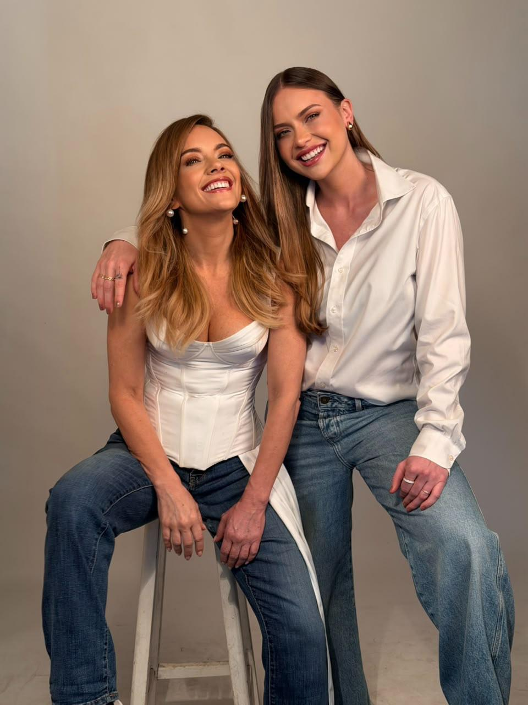

LEP — Lugar de encontros e produções
Histórias que
pedem imagem.
São Paulo · desde 2005
role para explorarDesde 2005
Produzir é
criar encontros.
Especializada na área cultural, a LEP Filmes nasceu da parceria entre Liz Reis e Beatriz Reis. Desde 2005, criamos espetáculos teatrais marcantes e, a partir de 2010, estendemos essa paixão para a produção de projetos audiovisuais.
- 2005Produção cultural
- Espetáculos, projetos e encontros que deram origem à trajetória da LEP.
- 2010Cinema e audiovisual
- Expansão da atuação para filmes, documentários, séries e outros projetos audiovisuais.

Fundadoras
Duas visões,
uma LEP.
Fundada por Liz Reis e Beatriz Reis, a LEP traduz a sinergia de duas trajetórias dedicadas à cultura e ao audiovisual.
Liz ReisFundadora | Produtora | Diretora
Bia ReisProdutora
Bastidores, histórias e novidades